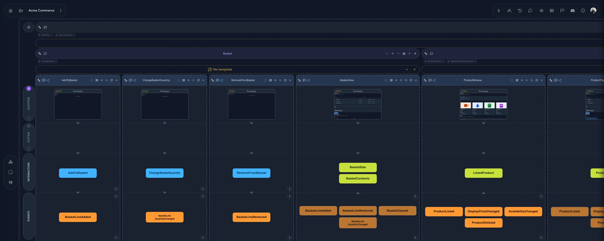
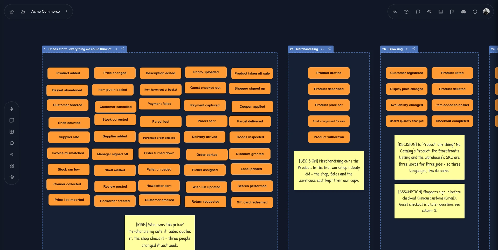
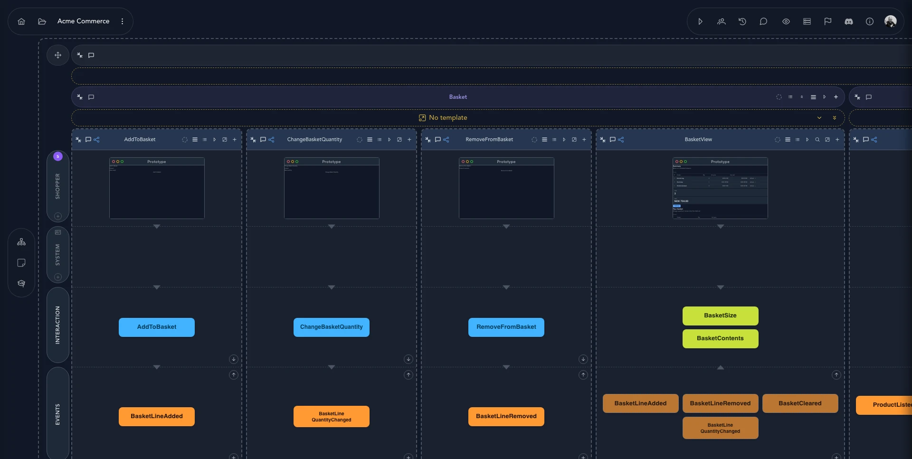
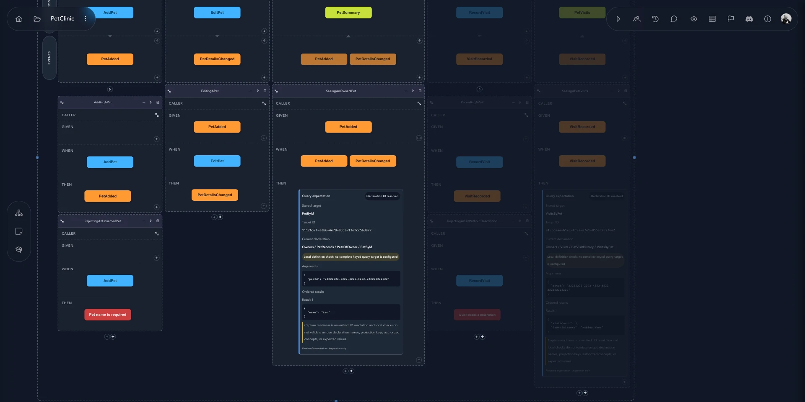
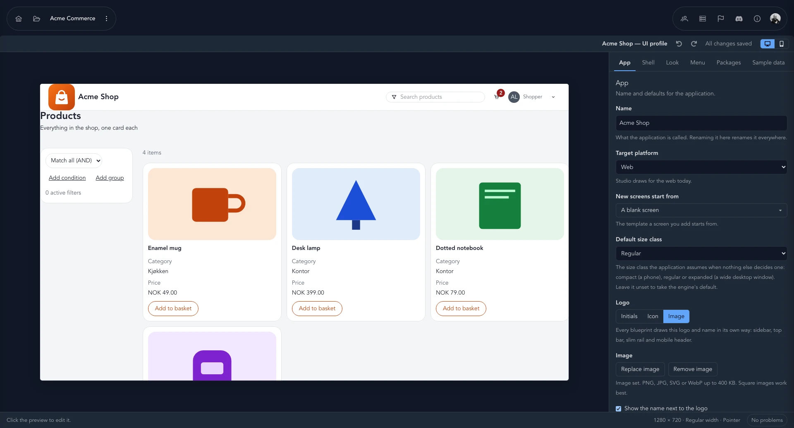
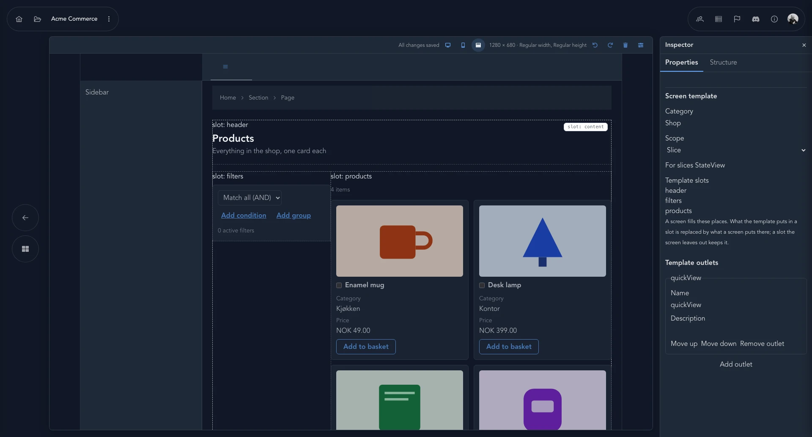

Bring developers, domain experts and product owners onto the same board. In Cratis Studio, you brainstorm events, connect commands to outcomes, and discuss specifications and screen prototypes. Studio is an optional collaborative event-modeling workspace within Cratis Platform.
Sign up with your existing account14-day free trialAlready a user? Log in

A developer needs to know which command changes the system. A domain expert needs to check the outcome. Studio puts those questions beside the events and screens your team is discussing.
The workshop ends, the photo of the sticky notes is filed, and the real design lives in someone's head.
With Studio: the workshop board is the model. Brainstormed events become slices on the same canvas, with the decisions and open questions still attached.
A command name alone does not explain what the system is supposed to do, or when it should reject the request.
With Studio: Given / When / Then specifications sit beside the slice, so the team can discuss expected events and rejection outcomes.
A prompt can leave business rules unstated. A plausible response can still miss the behavior your team intended.
With Studio: discuss changes in the context of the board. People remain responsible for checking suggestions against the domain and implementation.
Everything below is a screenshot of the live product, taken from our own sample projects.

Get every event onto the board before anyone argues about shape. Then cluster them, name the areas, and write down what you decided — and what you're still unsure about.
Each slice is one thing the system does: what the person sees, the command they send, the events that record it, and the read model that answers back. Lanes for personas and the system keep it honest.

BasketView read model that listens to their
events, and a prototype for each screen.
PetAdded; adding one without a
name is rejected with “Pet name is required”.Describe what should happen as Given, When, Then — using the same events and commands as the model. Review successful outcomes and rejected requests together; implementation and regression testing still need engineering work.
Give each application a look and a shell with a UI profile, then build screen templates with slots your slices fill in. See your product take shape against sample data while the model is still fresh.


Dump every event on the canvas. Cluster them, name the areas, and write down decisions and risks as you go.
Turn events into slices with commands, read models and screens — one behavior at a time.
Write the Given / When / Then, shape the screens, and talk changes through with your agents.
Use the model to guide implementation. Review code, test behavior and revisit the model as requirements change.
Studio is multiplayer by design. People and agents share the model, and the human stays in the loop on what matters: how workflows fit together, what is valuable, how it feels.
Every board has a prompt bar. Ask for a change or a question answered, in the context of the board you're looking at.
See who is on the board and where their cursor is. Developers, domain experts and product owners edit the same living model together.
Organize work into projects with several applications, each with their own domains, event models, screens and policies.
Mark a project as a keeper and it can't be renamed or deleted by accident until protection is lifted deliberately.
Use commands, events and read models to discuss what needs building. Check the implementation against those decisions as the application changes.
Studio is built on Cratis Chronicle, the event-storage and projection component of Cratis Platform. Modeling in Studio and operating an application's event store are different tasks.
Studio organizes the discussion around events, commands and the people using the system. For the thinking behind that approach, read the vision →
Name what happened in the domain and connect it to the command or interaction that caused it. Storage and retention decisions belong to the application's implementation.
One behavior, end to end. Small enough to specify, review and change on its own.
People own the design and check agent suggestions. A shared model supplies context; it does not guarantee that an agent understands the domain.
Given / When / Then makes expected outcomes explicit during design. Use those outcomes to guide implementation tests.
Start with a 14-day free trial. Prices exclude VAT.
1 seat
€12.00/mo
€12.00 per seat / mo
Save 15% €122.40 billed yearly
3 seats
€30.00/mo
€10.00 per seat / mo
Save 17% €298.80 billed yearly
10 seats
€80.00/mo
€8.00 per seat / mo
Save 20% €768.00 billed yearly
50 seats
€300.00/mo
€6.00 per seat / mo
Save 22% €2,808.00 billed yearly
Cratis Studio is a collaborative event-modeling workspace. Use it when your team needs to discuss commands, events, read models and screens together. For the method behind the board, start with the event modeling documentation.
Studio is for developers, domain experts, and product owners who want a shared understanding of how their system behaves. They can edit the same living model in real time; see team collaboration and other features.
No. Cratis is the organization; Cratis Platform brings together independently adoptable components. Chronicle handles event storage and projections. Arc handles application commands and queries, including without event sourcing. Components provides optional React UI. Go directly to the Cratis documentation to build with those tools; Studio adds a shared modeling workspace, not a required first step.
No. A model records intended behavior and gives the team something concrete to review. Engineers still implement integrations, test the code and decide how to deploy and operate the application. See how modeling fits into that work.
Studio is a commercial product, separate from Cratis's open-source tools. This site provides account links and pricing, including the published 14-day free trial and per-seat plans. Read the terms and conditions for the service terms.
No. Modeling events describes what the application should record; it does not establish storage, retention or compliance guarantees for your application. Studio's event-sourcing approach is separate from those engineering decisions.
Your privacy matters. Read how Cratis Studio collects, uses and protects personal data in our privacy policy, and what you agree to when you use the service in the terms.
Create your organization and start a 14-day free trial. Bring the team — then bring the agents.